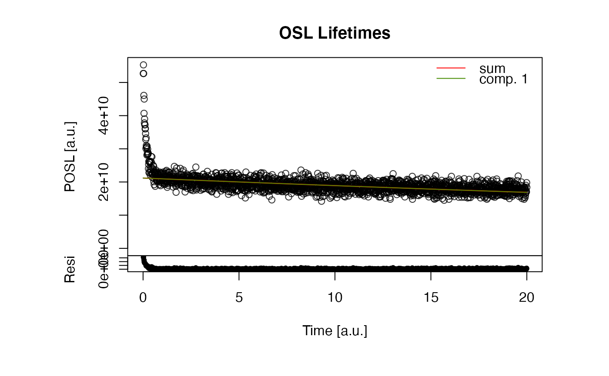

R/fit_OSLLifeTimes.R
fit_OSLLifeTimes.RdFitting and Deconvolution of OSL Lifetime Components
fit_OSLLifeTimes(
object,
tp = 0,
signal_range = NULL,
n.components = NULL,
method_control = list(),
plot = TRUE,
plot_simple = FALSE,
verbose = TRUE,
...
)RLum.Data.Curve, RLum.Analysis, data.frame or matrix (required):
Input object containing the data to be analysed. All objects can be provided also as list for an automated
processing. Please note: NA values are automatically removed and the dataset should comprise at least 5 data points.
numeric (with default): option to account for the stimulation pulse width. For off-time measurements
the default value is 0. tp has the same unit as the measurement data, e.g., µs. Please set this parameter
carefully, if it all, otherwise you may heavily bias your fit results.
numeric (optional): allows to set a channel range, by default all channels are used, e.g.
signal_range = c(2,100) considers only channels 2 to 100 and signal_range = c(2) considers only channels
from channel 2 onwards.
numeric (optional): Fix the number of components. If set the algorithm will try to fit the number of predefined components. If nothing is set, the algorithm will try to find the best number of components.
list (optional): Named to allow a more fine control of the fitting process. See details for allowed options.
logical (with default): Enable/disable plot output
logical (with default): Enable/disable reduced plot output. If TRUE, no
residual plot is shown, however, plot output can be combined using the standard R layout options,
such as par(mfrow = c(2,2)).
logical (with default): Enable/disable terminal feedback
parameters passed to plot.default to control the plot output, supported are:
main, xlab, ylab, log, xlim, ylim, col, lty, legend.pos, legend.text. If the input
object is of type RLum.Analysis this arguments can be provided as a list.
-----------------------------------
[ NUMERICAL OUTPUT ]
-----------------------------------
RLum.Results-object
slot:
@data
| Element | Type | Description |
$data | matrix | the final fit matrix |
$start_matrix | matrix | the start matrix used for the fitting |
$total_counts | integer | Photon count sum |
$fit | nls | the fit object returned by minpack.lm::nls.lm |
slot:
@info
The original function call
------------------------
[ TERMINAL OUTPUT ]
------------------------
Terminal output is only shown of the argument verbose = TRUE.
(1) Start parameter and component adaption
Trave of the parameter adaptation process
(2) Fitting results (sorted by ascending tau)
The fitting results sorted by ascending tau value. Please note
that if you access the nls fitting object, the values are not sorted.
(3) Further information
The photon count sum
Durbin-Watson residual statistic to asses whether the residuals are correlated, ideally
the residuals should be not correlated at all. Rough measures are:
D = 0: the residuals are systematically correlated
D = 2: the residuals are randomly distributed
D = 4: the residuals are systematically anti-correlated
You should be suspicious if D differs largely from 2.
------------------------
[ PLOT OUTPUT ]
------------------------
A plot showing the original data and the fit so far possible. The lower plot shows the residuals of the fit.
The function intends to provide an easy access to pulsed optically stimulated luminescence (POSL) data, in order determine signal lifetimes. The fitting is currently optimised to work with the off-time flank of POSL measurements only. For the signal deconvolution, a differential evolution optimisation is combined with nonlinear least-square fitting following the approach by Bluszcz & Adamiec (2006).
Component deconvolution algorithm
The component deconvolution consists of two steps:
(1) Adaptation phase
In the adaptation phase the function tries to figure out the optimal and statistically justified
number of signal components following roughly the approach suggested by Bluszcz & Adamiec (2006). In
contrast to their work, for the optimisation by differential evolution here the package 'DEoptim' is used.
The function to be optimized has the form:
$$\chi^2 = \sum(w * (n_i/c - \sum(A_i * exp(-x/(tau_i + t_p))))^2)$$
with \(w = 1\) for unweighted regression analysis (method_control = list(weights = FALSE)) or
\(w = c^2/n_i\) for weighted regression analysis. The default values is TRUE.
$$F = (\Delta\chi^2 / 2) / (\chi^2/(N - 2*m - 2))$$
(2) Final fitting
method_control
| Parameter | Type | Description |
p | numeric | controls the probability for the F statistic reference values. For a significance level of 5 % a value of 0.95 (the default) should be added, for 1 %, a value of 0.99 is sufficient: 1 > p > 0 (cf. stats::FDist) |
seed | numeric | set the seed for the random number generator, provide a value here to get reproducible results |
DEoptim.trace | logical | enables/disables the tracing of the differential evolution (cf. DEoptim::DEoptim.control) |
DEoptim.itermax | logical | controls the number of the allowed generations (cf. DEoptim::DEoptim.control) |
weights | logical | enables/disables the weighting for the start parameter estimation and fitting (see equations above).
The default values is TRUE |
nlsLM.trace | logical | enables/disables trace mode for the nls fitting (minpack.lm::nlsLM), can be used to identify convergence problems, default is FALSE |
nlsLM.upper | logical | enables/disables upper parameter boundary, default is TRUE |
nlsLM.lower | logical | enables/disables lower parameter boundary, default is TRUE |
0.1.5
Kreutzer, S., Schmidt, C., 2024. fit_OSLLifeTimes(): Fitting and Deconvolution of OSL Lifetime Components. Function version 0.1.5. In: Kreutzer, S., Burow, C., Dietze, M., Fuchs, M.C., Schmidt, C., Fischer, M., Friedrich, J., Mercier, N., Philippe, A., Riedesel, S., Autzen, M., Mittelstrass, D., Gray, H.J., Galharret, J., 2024. Luminescence: Comprehensive Luminescence Dating Data Analysis. R package version 0.9.24.9000-106. https://CRAN.R-project.org/package=Luminescence
Bluszcz, A., Adamiec, G., 2006. Application of differential evolution to fitting OSL decay curves.
Radiation Measurements 41, 886-891. doi:10.1016/j.radmeas.2006.05.016
Durbin, J., Watson, G.S., 1950. Testing for Serial Correlation in Least Squares Regression: I. Biometrika 37, 409-21. doi:10.2307/2332391
Further reading
Hughes, I., Hase, T., 2010. Measurements and Their Uncertainties. Oxford University Press.
Storn, R., Price, K., 1997. Differential Evolution – A Simple and Efficient Heuristic for Global Optimization over Continuous Spaces. Journal of Global Optimization 11, 341–359.
##load example data
data(ExampleData.TR_OSL, envir = environment())
##fit lifetimes (short run)
fit_OSLLifeTimes(
object = ExampleData.TR_OSL,
n.components = 1)
#>
#> [fit_OSLLifeTime()]
#>
#> (1) Start parameter and component adapation
#> ---------------------(start adaption)------------------------------------
#> >> + adaption for 1 comp. : Inf (calc.) <> 3 (ref.) >> [add comp.] >> [forced stop]
#> ---------------------(end adaption)--------------------------------------
#>
#>
#> >> Applied component matrix
#> A tau
#> Comp.1 2.118737e+12 87.9146
#>
#>
#> (2) Fitting results (sorted by ascending tau)
#> -------------------------------------------------------------------------
#> Estimate Std. Error t value Pr(>|t|)
#> A.1 2.118737e+10 9.710554e+07 218.18915 0.000000e+00
#> tau.1 8.791461e+01 3.167935e+00 27.75139 1.196534e-143
#> -------------------------------------------------------------------------
#>
#> (3) Further information
#> -------------------------------------------------------------------------
#> Photon count sum: 3.831e+13
#> Durbin-Watson residual statistic: 0.77 [ <> ]
#>

#>
#> [RLum.Results-class]
#> originator: fit_OSLLifeTimes()
#> data: 4
#> .. $data : matrix
#> .. $start_matrix : matrix
#> .. $total_counts : numeric
#> .. $fit : nls
#> additional info elements: 1
##long example
if (FALSE) {
fit_OSLLifeTimes(
object = ExampleData.TR_OSL)
}